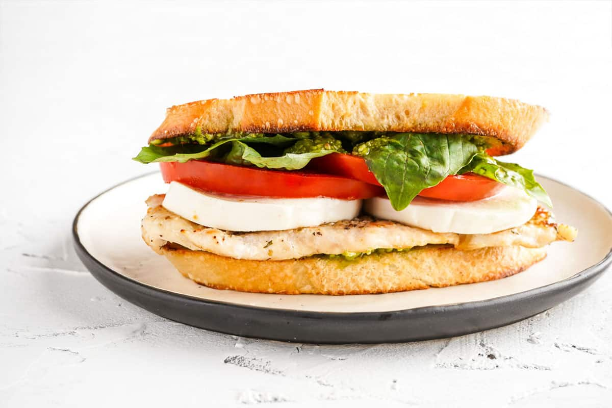

Pesto Chicken Carpese Sandwich

Description
Grilled chicken breasts with tomatoes and fresh mozzarella tucked between two slices of a ciabatta roll slathered with pesto…it is everything a caprese sandwich should be!
Ingredients
- 2 (4 ounce) skinless, boneless chicken breasts
- 1 teaspoon Italian seasoning
- 1/4 teaspoon salt
- 1 heirloom tomato
- 1 (8 ounce) container fresh mozzarella cheese
- 1/4 cup basil pesto, divided
- 4 ciabatta rolls
Steps
- Preheat the oven to 375 degrees C (190 degrees C).
- Thinly slice chicken breasts in half and season with Italian seasoning and salt. Place chicken on a rimmed baking sheet.
- Bake in the preheated oven until chicken is no longer pink in the center and the juices run clear, about 20 minutes. An instant-read thermometer inserted into the center should read at least 165 degrees F (74 degrees C).
- Cut heirloom tomato and mozzarella cheese into four 1/3-inch thick slices. Set out tomato slices on a baking sheet and top with mozzarella slices. Add to oven and bake for the last 10 minutes with the chicken. Remove chicken from oven.
- Turn oven to broil and broil tomatoes and cheese, until cheese has melted, 2 to 3 minutes. If desired, add ciabatta buns and toast under the broiler until browned, 1 to 2 minutes.
- To assemble the sandwiches, place a chicken filet onto the ciabatta bun, top with tomato and melted mozzarella, and 1 tablespoon pesto.